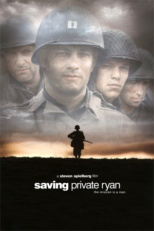

Opening with the Allied invasion of Normandy on 6 June 1944, members of the 2nd Ranger Battalion under Cpt. Miller fight ashore to secure a beachhead. Amidst the fighting, two brothers are killed in action. Earlier in New Guinea, a third brother is KIA. Their mother, Mrs. Ryan, is to receive all three of the grave telegrams on the same day. The United States Army Chief of Staff, George C. Marshall, is given an opportunity to alleviate some of her grief when he learns of a fourth brother, Private James Ryan, and decides to send out 8 men (Cpt. Miller and select members from 2nd Rangers) to find him and bring him back home to his mother...
